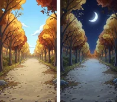

制作：さまよえるなん（個人開発）
ツンデレな女の子と、おしゃべりをして、少しずつ仲良くなるゲームです。
ふりーむ！で公開準備中キャラクターの「莉央」と、おしゃべりを楽しむミニゲームです。スマホでも、パソコンでも、ブラウザで遊べます。
会話は、あらかじめ用意したセリフから選ばれます。セリフの種類は、多くありません。
自分で曲や画像を作るときの、見本としてお使いください。読み込み方は、各zipの中の「読み込み方.txt」と、作成ガイド（PDF）に書いてあります。

読み込んだデータは、お使いの端末の中だけで使われます。ゲームが外部へ送ることはありません。曲は、ページを閉じると消えます。服と背景は、ブラウザの中に保存されます。
画像の作成と、プログラム・音楽の制作の助言に、生成AIを利用しています。ゲームの中で、AIが外部と通信することはありません。
| 日付 | 内容 |
|---|---|
| 2026年11月 | サンプルパック（莉央・寝巻き ＋ 背景、ふわふわキャラ）と、作成ガイドを公開 |